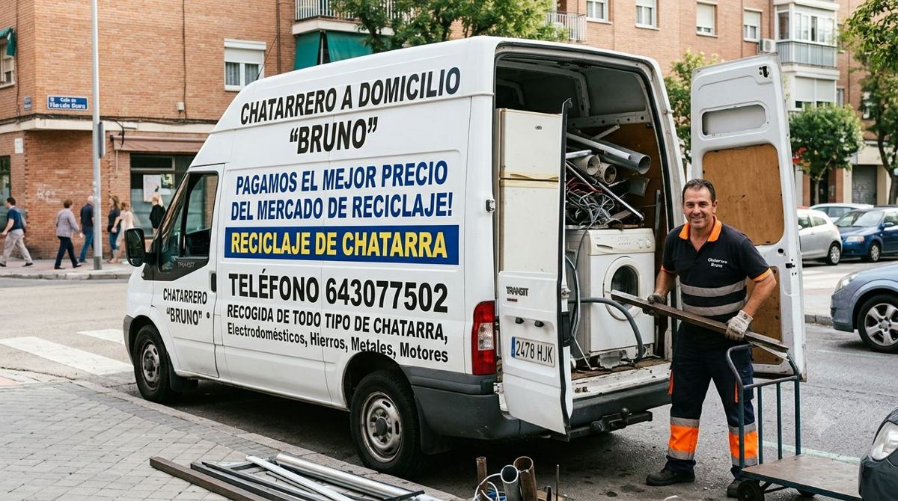
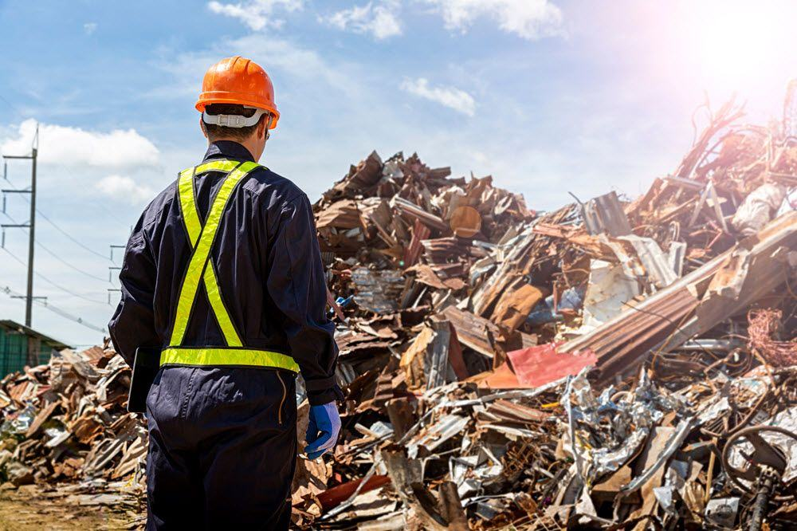

★★★★★ 5,0 en Google

Tú no cargas nada. Nosotros vamos, lo sacamos y te pagamos lo que vale.
Mándanos por WhatsApp una foto de lo que tienes.
Te decimos lo que te pagamos por ello.
Quedamos a la hora que te venga bien y lo cargamos nosotros.
Te pagamos en el momento y te dejamos el sitio libre.
Marca lo que quieres quitarte y te escribimos con precio. Recogemos todo tipo de chatarra, electrodomésticos, hierros, metales y motores.
